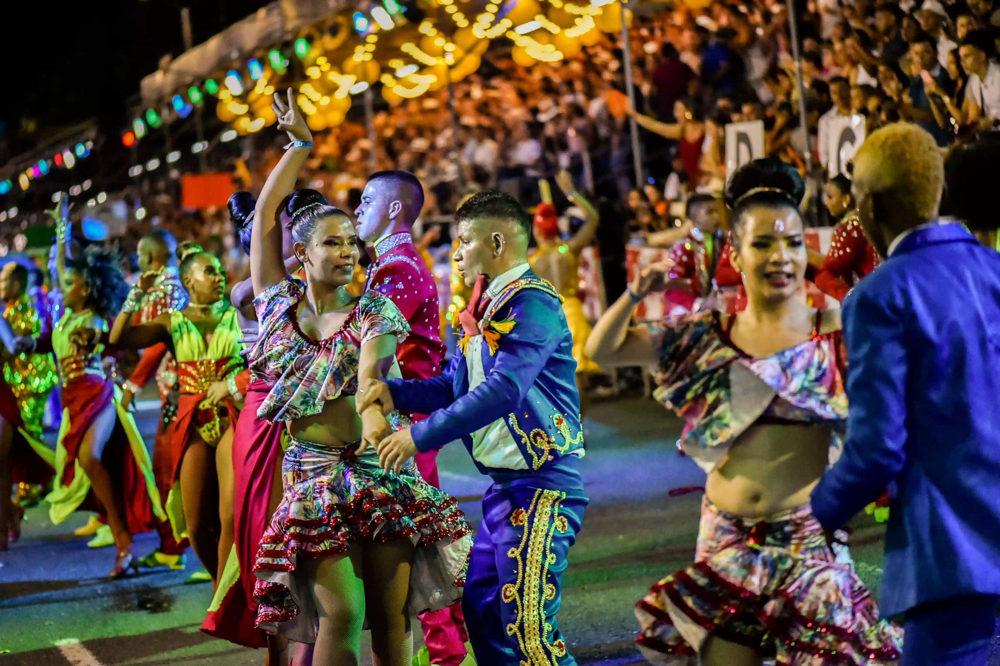
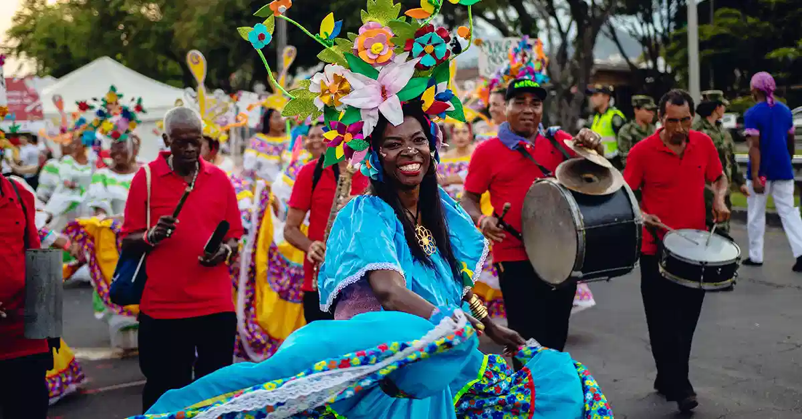
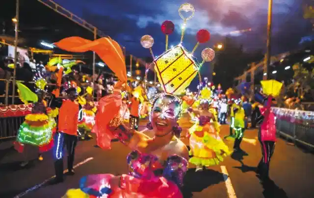

Feria de Cali
Descripcion historica del evento
La Feria de Cali se celebra del 25 al 30 de diciembre desde 1957. Es conocida mundialmente como la capital de la salsa, donde este ritmo cubano encontro en Colombia su segunda patria y se transformo en el estilo caleño: mas rapido, elegante y virtuoso. Cada año atrae a mas de un millon de visitantes.
Danzas y vestuarios
La salsa calena se caracteriza por el footwork rapido, los giros elegantes y el trabajo en pareja. Los bailarines visten trajes brillantes y coloridos que realzan cada movimiento. El Salsodromo y los conciertos son los eventos mas esperados.
Importancia cultural
La Feria es parte integral de la identidad caleña. La salsa no es solo musica: es un lenguaje de encuentro y una expresion de la herencia afrocaribeña que vive en el sur de Colombia y que la ciudad lleva con orgullo al mundo.
Galeria de imagenes


